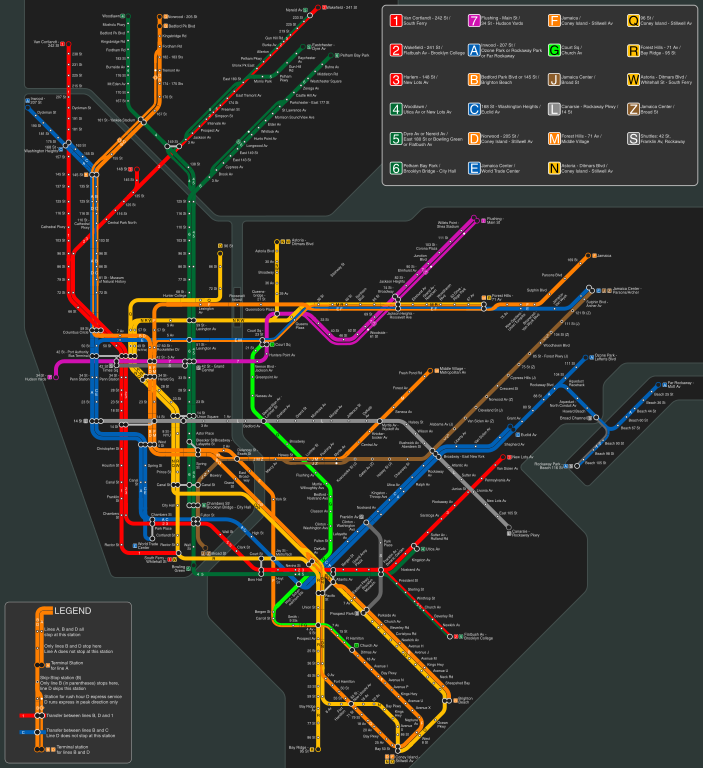

Head Count NYC

I decided to focus my project on the MTA, specifically COVID's effect on Subway and train ridership. My underlying hypothesis was that overall ridership has decreased since COVID's first case in NYC and increased after talk of the vaccine appeared. The data I used was the MTA ridership data for 2020-2021 as well as other MTA sources like stations closed and overall usage changes of public goods since COVID. After first observing pre-covid data I used python to create a scatter plot of MTA ridership data. I used pandas, numpy and pandasql.